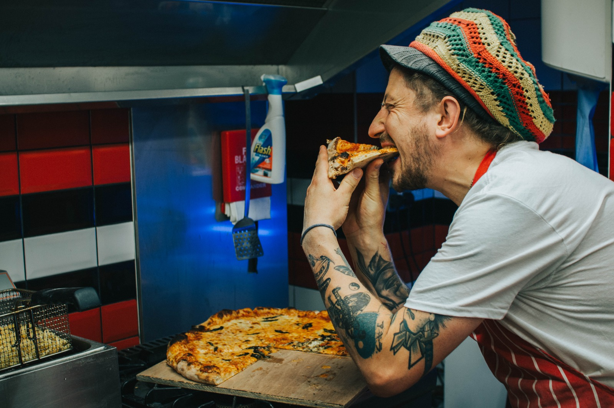

Dan & Balzy welcome you with open arms to Hooker & Eight - Gloucester's only independent pizza joint.
Dan and Balz are childhood school friend who played local youth rugby together for many years. It was one cold christmas night at the Old Elm in Churchdown in 2014 where a very important was ask... "Why isn't there a proper decent pizza place in Gloucester", and, other than the pubs, "Why ‘ent there any places to go to before the rugby!".
It was one that couldn't be answered for a few years and almost remained a drunken pipe-dream.
Until 2018, when 49 Westgate Street became available and was snapped up by our incredible landlords Anne and Toby Wooldridge. The timing could not be better for Balzy who had just discovered his wife was pregnant and was moving home to Gloucester after several years away.
The only problem was the site was a former music shop that needed a lot of work to get ready. 99% of what you see in the restaurant has been-up cycled with most of the cosmetic work, painting, sanding and woodwork being done by Dan, Balzy, Toby, Balzy's mum and, very rarely, Balzy's Dad. Big up to Stu, Digz, Little Venn, Graeme, Nick Cook and all other contractors for the professional work we needed doing.
It took the best part of a year and genuine blood, sweat and tears to get the restaurant ready for the city of Gloucester to enjoy and on 11th October 2019. Gloucester Captain (wasn't then, lolz) Lewis Ludlow came in the evening to officially open Hooker & Eight. A homage to Gloucester rugby and a pizza joint that caters to Gloucester tastes and doesn't try to be something it is not!
The result, we hope, is a relaxing, warm, and inviting 30 seater restaurant with great choons, great selection of booze and soft drinks and the most banging pizzas showcasing the best Gloucester and Gloucestershire has to offer. Our mantra is for you to have the best time when you are in our company.
It is likely that always one of Dan and Balzy (quite often both) will be working when you visit - we love chatting to our patrons so please bend our ear when you come in!
Much love
Dan & Balzy